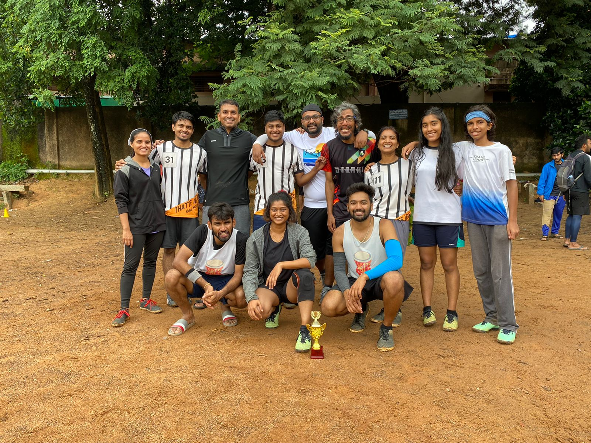
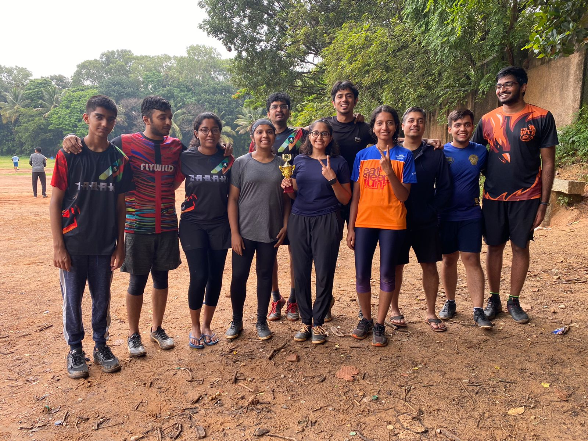
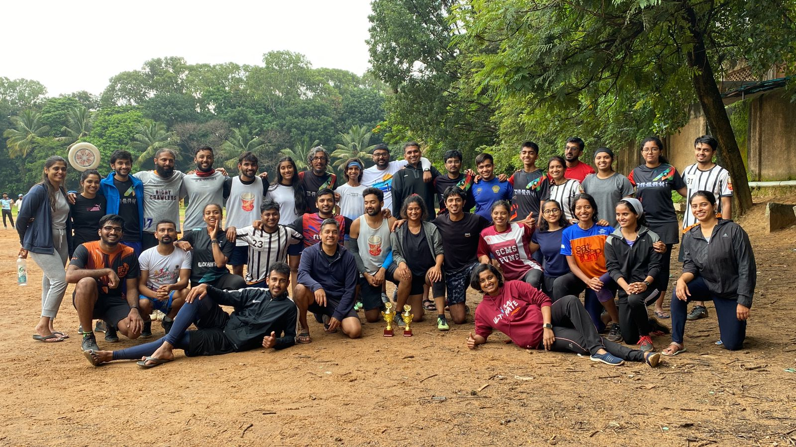

MIL 2022 was won by Netflicks & Chill in a thrilling final against Uppitwo that was very closely fought. Here’s some pictures of the finalists and a final closing picture!



Points Table
| Team | League Points | Skill Play Points |
|---|---|---|
| Netflicks & Chill | 10 | 11 |
| Upitwo | 8 | 13 |
| Throwjan | 4 | 2 |
| Cutternaak | 2 | 7 |
Match Scores
| . | . | ||
|---|---|---|---|
| Cutternaak (1) | 2 | 3 | ThrowJan (1) |
| Upitwo (2.5) | 6 | 3 | Netflicks & Chill (0.5) |
| Cutternaak (3) | 5 | 4 | Upitwo (2) |
| Netflicks & Chill (2.5) | 6 | 1 | ThrowJan (0.5) |
| Cutternaak (1) | 4 | 6 | Netflicks & Chill (4.5) |
| Upitwo (5) | 8 | 1 | ThrowJan (0) |
| Upitwo (0) | 6 | 7 | Netflicks & Chill (2.5) |
| Cutternaak (1) | 3 | 7 | Throwjan (-0.5) |
| Netflicks & Chill (1) | 5 | 3 | Throwjan (1) |
| UpiTwo (3.5) | 7 | 6 | Cutternak (1) |
| Upitwo (?) | 7 | 6 | ThrowJan (?) |
| Cutternaak (?) | 2 | 4 | Netflicks & Chill (?) |
| Upitwo | 9 | 10 | Netflicks & Chill |
Schedule
| Date | 6:25 am to 7:00 am | 7:05 am to 7:40 am |
|---|---|---|
| 2nd April, 2022 | Cutternak — Throwjan | Upitwo — Netflix & Chill |
| 16th April, 2022 | Cutternak — Upitwo | Netflix & Chill — Throwjan |
| 23rd April, 2022 | Cutternak — Netflicks & Chill | UpiTwo — Throwjan |
| 30th April, 2022 | Upitwo — Netflicks & Chill | Cutternak — Throwjan |
| 21st May, 2022 | Netflicks & Chill — Throwjan | UpiTwo — Cutternak |
| 28th May, 2022 | UppiTwo — Throwjan | Cutternak — Netflix and Chill |
| 21st June, 2022 | Throwjan — Netflix and Chill (Finals) | (Finals) |
The schedule is tentative and is subject to change as the league progresses. Captains will be notified of any changes.
Teams
| Cutternaak | Upitwo | Netflicks & Chill | Throwjans |
|---|---|---|---|
| Aishu (c) | Tez (c) | Haritha (c) | Prakruthi (c) |
| Appu (c) | Ranjan (c) | Pavan (c) | Akilesh (c) |
| Bugsy | Advait | Bharath (Poba) | AFR |
| Chaitra | Aman Mehta | Dhivya | Amith |
| Harsha M Krishna | Eddie | Kavi | Ananth SG |
| Kedar Sastry | Megha | KK | Arvind S |
| Keerthana J | Mohith | Nandini | Charmaine |
| Netha | Nikki | Ppr | Iris Rose John |
| Nicolai | Nimisha | Prerana | Karthik K |
| Nishil | Prajwal M | punch | kasi |
| Pani | Rakshith | Rahul | Kavya Singaraju |
| Saqlain | Samhita Bhat | Ringo | Keer |
| Smitha Pai | Sanjana | Sasi | Salman |
| Sweatha | VK | Sid (Siddharth) | Sheetal |
| Vijay S | Zen | Sreelata Jonnala | Shilpi |
| Aditya | Tanushree P |
League Format and Rules
Rules
Games will use the WFDF Rules of Ultimate 2021-2024 rules for the tournament.
Format
We'll have both 4 v 4 games and 7 v 7 games.
Target
The game will be played until one of the team scores 9 points.
Game Duration
Games will be 35 minutes long. Games in NCJ will usually go from 6:25 am to 7 am, and 7:05 am to 7:40 am.
Time cap 7 on 7
The time/hard cap occurs after 30 minutes of game time, if the target
has not been reached. At the time cap, play continues till the
completion of the current point. If no team has reached the target (9),
one goal is added to the highest score to determine the time cap target.
Play continues until one of the teams reaches this time cap target
before hard stop (at 35min).
Hard Stop at 35 min, Team with the Highest Point Wins.
In case of a tie at hardstop, the team with the highest non-goal points wins. (See section below on Points)
Half time
There will be no half-time during the games.
Time outs
Each team has one time out of 2 minutes per game. The time cap does not affect the number of timeouts available to teams.
Captains
A team must have one designated captain and one designated spirit captain per game.
Accreditation
Teams are encouraged to get all of their players to take the WFDF standard accreditation, at least by the end of April. Points will be awarded to teams for this.
Teams & Time
Both teams are required to have 7 players on the line at the designated start time.
-
Teams are given a grace period of 2 minutes to start the game.
-
At the end of 2 minutes, if a team cannot have 7 players on the > line, they lose a time-out.
-
After that, for a delay of every two minutes, a team concedes 1 > point to the other team (assuming they have their 7 players on the > line).
-
If both teams do not have 7 players on the line, one point is cut > from the target (9 goals), for every two minutes.
-
At the end of 20 minutes, if a team has not fielded 7 players, they > must forfeit the game. If both teams were offending, they will > both record a loss in the points table.
Time between pulls
Teams are encouraged to start the next point as quickly as they can. Rush back to the end-zone after each point, and aim to start within 60 seconds after a point has ended. These rules may be enforced, as we progress through the league.
Gender ratio (men:women)
7v7 game
The squads/teams have been divided to have a ratio of somewhere in between 5:2 and 4:3 of men:women, based on the number of sign-ups. Ideally, we would like an alternating 4:3 and 3:4 ratio, but based on the turnout on a given day, the captains can agree to play 4:3 constantly. Penalty for teams which don't have the ratio. Play with only 6 players, against 7 on the other team. 4:2 is allowed.
4v4 game
Ratio 2:2
Points will be awarded to teams in the following categories
-
Win/Loss
-
2 points for winning 7 v 7 game
-
1 point for winning 4 v 4 game
-
-
Skill-Play Points
-
Out of bounds pulls -0.5
-
No turnover offense point +1
-
Turnover and Score on first attempt +1
-
All touch score +1
-
Tournament format
Teams play 2 sets of round robin games 7v7 and 4v4.
The two teams with the highest points, play finals with just the on field scoring format
Team with the highest number of Skill Play Points in the league stage will be awarded a prize.
Previous Edition Rules
Sign-up Poster

FAQ
- I just attended two sessions. Is it ok for me to join the league?
Hell yeah! You must! The idea of this league is to give everyone a chance to play some competitive Ultimate in an safe and familiar environment that will help everyone learn and grow.
- I will be out of town for next two weeks. Can I still play?
Yes, we specifically ask for the availability of players to let teams plan their line-ups and strategy accordingly. We understand that not everyone can be available every weekend for the next couple of months, and teams will adjust accordingly. In extreme cases, the league schedule can also be adjusted.
- Can I also get one of my friend to join the league now?
Yes, please do! It would be nice if they can join some sessions during the week, but just coming for the league is fine too.
- Can I come only for the league and not come on the weekdays?
Yes, that’s totally cool! But, eventually you may get so hooked to Ultimate that you want to come back on weekdays too.
- I’m not fit enough to play in a tournament. What do I do?
Join the league! Hopefully, participating in the league will inspire you to improve your fitness, along with getting a little help from your teammates and friends.
- I played ultimate long back and stopped playing. Can I come anyway?
HELL YEAH! JUSHT YOU COME BACK!